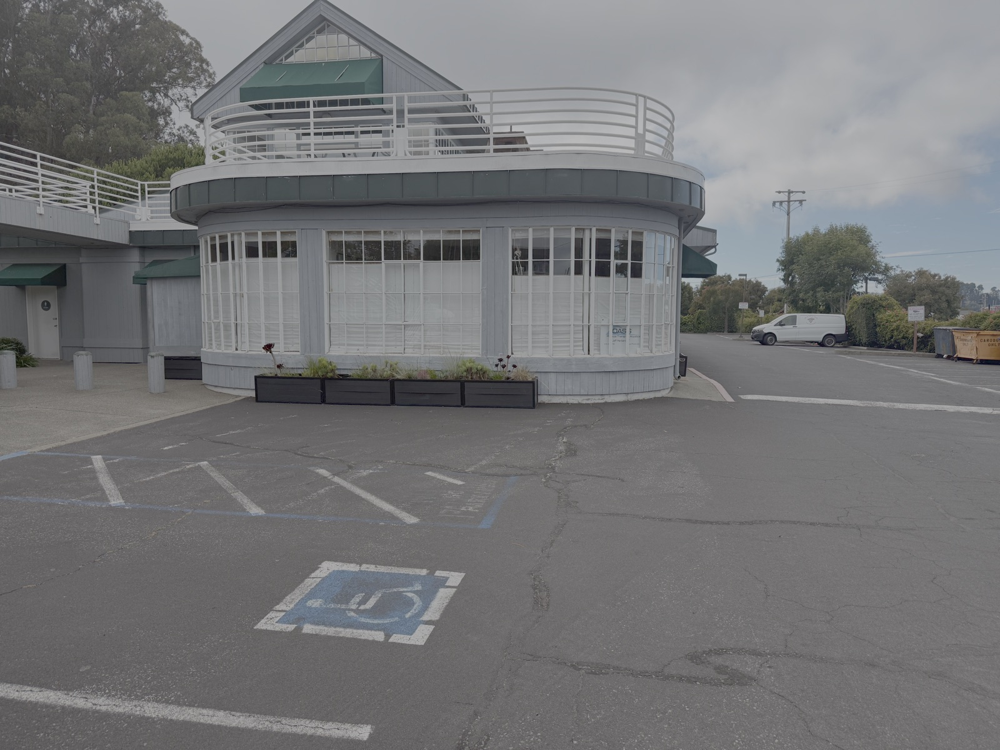

Thomas A Kowalski, OTR
Current through August 31, 2026: 85 Liberty Ship Way, Suite 103, Sausalito CA 94965
Effective September 1, 2026: 4000 Bridgeway, Suite 301, Sausalito CA 94965
Bio
Services
Directions
Please call or text (415) 806-7034 if you need any help finding us.
Current Office Through August 31, 2026
85 Liberty Ship Way, Suite 103
Sausalito CA 94965
New Office Beginning September 1, 2026

4000 Bridgeway, Suite 301
Sausalito CA 94965
The new office is just off Bridgeway / 101 in Sausalito. Email, fax, and phone remain the same.
Move-in date: September 1, 2026.
Directions to the New Office:
- From 101 North or South, take Exit 445A toward Marin City / Sausalito.
- Upon exiting, drive toward Sausalito.
- At the first signal, turn right onto Bridgeway Ave.
- Drive on Bridgeway to the next signal, which is Gate 5 Rd.
- Turn left onto Gate 5 Rd.
- 4000 Bridgeway is on your left; park in the rear.
- Suite 301 is on the ground floor with the hemispherical windows.